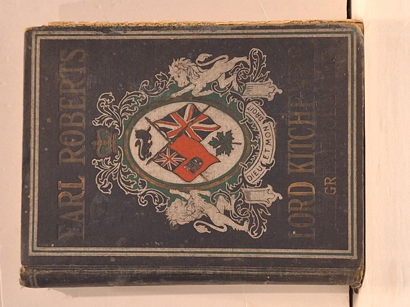

Earl Roberts, V.C., Lord Kitchener and The Great Boer War
T. G. Marquis, B.A. (with personal reminiscences by Frederick Hamilton, M.A.) · Roberts and Kitchener Publishers, 1902

C$28 · Fair condition
Original early-twentieth-century Canadian subscription volume, 'Earl Roberts, V.C., Lord Kitchener and The Great Boer War,' by T. G. Marquis, B.A., with personal reminiscences by Frederick Hamilton, M.A., war correspondent for the Toronto Globe. Roberts and Kitchener Publishers; undated, circa 1902. A sweeping popular account spanning Lord Roberts's career (the Indian Mutiny, the Umbeyla and Abyssinian expeditions, the march to Kandahar) and Lord Kitchener's campaigns in the Soudan and South Africa, through to the close of the South African War and the Canadians' part at Hart's River. Issued 'embellished with more than 100 half-tone engravings,' all present in this copy. Decorative pictorial cloth boards featuring the Royal Arms and a Canadian heraldic flag cartouche. Condition: Fair; complete with all plates, but the binding is loose and at least one plate has been torn and reinserted; boards rubbed with shelf and edge wear; the title leaf shows edge tears. An uncommon original (not a print-on-demand reprint).
Details
- Publisher: Roberts and Kitchener Publishers, 1902
- Binding: Hardcover
- Edition: Subscription Edition (undated, circa 1902)
- Condition: Fair
- Category: Military